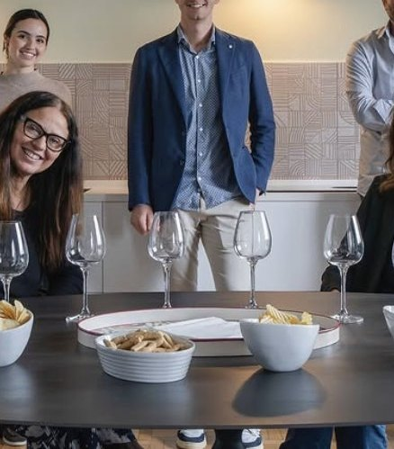

Una storia di famiglia, dal 1959
Dalla falegnameria della Brianza agli show-room di Milano e Pavia.
Motta Arredi nasce da una falegnameria nel 1959, nel cuore della Brianza. Nel settore da più di trent'anni, ha un'esperienza consolidata e accompagna il cliente non solo nella scelta dell'arredamento, ma anche nella creazione di ambienti e spazi della casa a misura d'uomo.
Ad oggi è presente con gli show-room di Milano (Via Faruffini 13 e Via Correggio 69) e Pavia, avviati da Paolo Motta. L'azienda si è presto ampliata con l'ingresso della moglie Roberta, dei figli Andrea e Alessia e della progettista Giulia.
Esperienza e innovazione sono le caratteristiche vincenti dello staff: menti giovani per progetti all'avanguardia e mani esperte che si fanno carico della loro realizzazione.
Oggi il team riunisce architetti, designer, falegnami e tecnici specializzati: dalla progettazione di interni all'arredamento su misura, fino al servizio chiavi in mano. Vi accogliamo nei nostri show-room, anche su appuntamento.

Le nostre sedi
Cesano Maderno
Via Vittorio Villa, 13
Cesano Maderno (MB)
La falegnameria dove nascono i nostri arredi su misura.
I nostri valori
Su misura
Ogni progetto è sartoriale: la falegnameria interna ci permette di risolvere anche gli spazi più ostici, fuori squadra o sottoscala.
Qualità
Materiali frutto di ricerca delle migliori proposte in commercio: dalla ferramenta al legno, fino alla scelta del top.
Collaborazione
Il lavoro svolto è sempre il risultato della collaborazione tra le richieste del cliente e il team che lavora sul progetto.